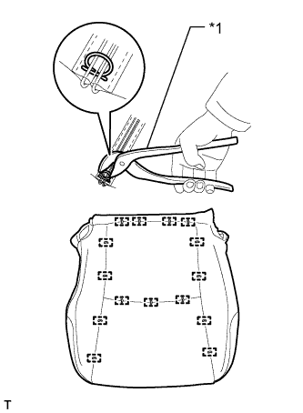
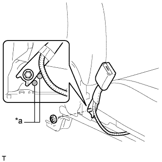
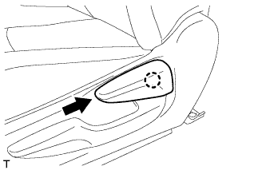

ДАТЧИК ПРИСУТСТВИЯ ПАССАЖИРА > УСТАНОВКА |
| 1. УСТАНОВИТЕ ОБИВКУ ПОДУШКИ РАЗДЕЛЬНОГО ПЕРЕДНЕГО СИДЕНЬЯ |
|  |
Установите обивку подушки сиденья на подушку сиденья и закрепите ее новыми витковыми пружинами, используя щипцы для витковых пружин.
| *1 | Щипцы для витковых пружин |
| 2. УСТАНОВИТЕ ОБИВКУ ПОДУШКИ СИДЕНЬЯ ВМЕСТЕ С ПОДУШКОЙ |
Установите обивку подушки сиденья вместе с подушкой.
Со стороны переднего пассажира:
Введите в зацепление захват, чтобы подсоединить разъем.
Введите в зацепление крепления.
Для моделей с системой подогрева сидений:
Подсоедините разъем подогревателя сиденья и подсоедините 3 зажима жгута проводов.
| 3. УСТАНОВИТЕ ЗАМОК РЕМНЯ БЕЗОПАСНОСТИ ПРАВОГО ПЕРЕДНЕГО СИДЕНЬЯ В СБОРЕ |
|  |
Установите замок ремня безопасности переднего сиденья и закрепите его гайкой.
| *a | Выступающая часть |
Со стороны водителя:
Подсоедините разъем и закрепите 4 зажима.
Со стороны переднего пассажира:
Подсоедините 2 разъема и 3 зажима.
| 4. УСТАНОВИТЕ ВНУТРЕННИЙ ЗАЩИТНЫЙ ЩИТОК ПОДУШКИ ПРАВОГО ПЕРЕДНЕГО СИДЕНЬЯ |
Введите в зацепление 4 захвата, чтобы установить защитный щиток подушки.
| 5. УСТАНОВИТЕ ЗАЩИТНЫЙ ЩИТОК ПОДУШКИ ПРАВОГО ПЕРЕДНЕГО СИДЕНЬЯ (для сидений с ручным приводом) |
Со стороны водителя:
Присоедините 5 зажима жгута проводов и подсоедините 2 разъема.
 |
Установите защитный щиток подушки и введите в зацепление 4 захвата и фиксатор.
Заверните винт.
| 6. УСТАНОВИТЕ ЗАЩИТНЫЙ ЩИТОК ПОДУШКИ ПРАВОГО ПЕРЕДНЕГО СИДЕНЬЯ (для сидений с электроприводом) |
Присоедините 3 зажима жгута проводов и подсоедините разъем жгута электропроводки сиденья.
Введите в зацепление 3 захвата, чтобы закрыть крышку жгута проводов.
Освободите фиксатор, присоединенный к пружине подушки сиденья, и установите его на защитный щиток подушки.

Присоедините 2 фиксатора, 3 захвата и направляющую.
Присоедините направляющую внутреннего защитного щитка подушки переднего сиденья № 1 и вверните винт.
Подсоедините разъем электродвигателя подъема.
| 7. УСТАНОВИТЕ РУЧКУ ОТПУСКАНИЯ РЕГУЛЯТОРА УГЛА НАКЛОНА ПРАВОГО СИДЕНЬЯ (для сидений с ручным приводом) |
|  |
Введите в зацепление захват, чтобы закрепить ручку.
| 8. УСТАНОВИТЕ РУЧКУ ПЕРЕКЛЮЧАТЕЛЯ ЭЛЕКТРОПРИВОДА НАКЛОНА СИДЕНЬЯ |
 |
Введите в зацепление 2 захвата, чтобы закрепить ручку.
| 9. УСТАНОВИТЕ РУЧКУ ПЕРЕКЛЮЧАТЕЛЯ ЭЛЕКТРОПРИВОДА ПЕРЕМЕЩЕНИЯ СИДЕНЬЯ ПО НАПРАВЛЯЮЩИМ И ПО ВЕРТИКАЛИ (для сиденья с электроприводом) |
 |
Введите в зацепление 2 захвата, чтобы закрепить ручку.
| 10. УСТАНОВИТЕ ПРАВОЕ ПЕРЕДНЕЕ СИДЕНЬЕ В СБОРЕ |
Для сиденья с ручным приводом:
Установите правое переднее сиденье в сборе (Нажмите здесь).
Для сидений с электроприводом:
Установите правое переднее сиденье в сборе (Нажмите здесь).